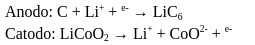

Os carros elétricos são movidos por motores elétricos alimentados por baterias de íons de lítio. As baterias de íons de lítio são compostas por um ânodo, um cátodo, um eletrólito e um separador. O ânodo é geralmente feito de grafite e o cátodo é feito de óxido de cobalto, óxido de níquel, óxido de manganês ou uma combinação desses materiais.
O eletrólito é geralmente composto por sais de lítio dissolvidos em solventes orgânicos, como o carbonato de propileno. Esses sais de lítio permitem que os íons de lítio se movam do ânodo para o cátodo durante o processo de carga e descarga da bateria.
O separador é um material poroso que separa o ânodo e o cátodo para evitar curto-circuitos. O separador é geralmente feito de um polímero poroso que permite a passagem de íons de lítio, mas não de elétrons.

A reação química que ocorre na bateria durante o carregamento é:

Além das baterias, os carros elétricos também têm sistemas de controle eletrônico para monitorar a carga e descarga das baterias, bem como para gerenciar o motor elétrico. Esses sistemas são geralmente controlados por um computador de bordo que usa software e sensores para gerenciar a energia da bateria e a operação do motor.
Outro aspecto químico importante nos carros elétricos é a regeneração de energia. Quando um carro elétrico desacelera ou freia, a energia cinética é convertida em energia elétrica e armazenada na bateria. Esse processo é conhecido como regeneração de energia e é possível graças aos motores elétricos, que podem operar como geradores quando desaceleram.
Em resumo, os carros elétricos têm uma série de aspectos químicos importantes, desde baterias de íons de lítio até os sistemas de controle eletrônico e a regeneração de energia. Esses aspectos são essenciais para o funcionamento dos carros elétricos e ajudam a torná-los uma alternativa mais limpa e eficiente aos veículos movidos a combustível fóssil.